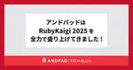

ANDPAD Tech Blog
https://tech.andpad.co.jp/
ANDPAD の開発部からのお知らせやエンジニアリングに関する話題を発信するTech Blog です。
フィード

アンドパッドは RubyKaigi 2025 を全力で盛り上げてきました ! 4
4
ANDPAD Tech Blog
毎年のことながら RubyKaigi ロスになってしまった id:sezemi です。 あっという間の 3 日間 + 前入り + 終了翌日移動の 5 日間でした。 スポンサー発表があった 2/7 から、ずーーーっと RubyKaigi 2025 のことを考えていたので、終了数日はやっぱり寂しい気持ちになりました。 ただ、 2026 函館が発表され、立て続けに会場も公開されると、おっ、やるぞ、となってしまうのですから不思議です。 待っておれ、函館 ! さて、そんな RubyKaigi 2025 を全力で盛り上げるべく準備した記事を開催前に公開しましたが、今回はそのアンサーとして「全力で盛り上げて…
14日前

アンドパッドは RubyKaigi 2025 を楽しんできました !
ANDPAD Tech Blog
こんにちは、 アンドパッドのRubyistのKanechikaAyumu です。 今回、RubyKaigi に初参加、そして愛媛にも初上陸しました！スピーカーの皆さんや参加者の Rubyist たちが持つ熱量・情熱に圧倒されつつも、たくさんの刺激を受けた、あっという間の数日間でした。 早くも来年の函館での開催が楽しみです！ そんな、アンドパッドが心待ちにしていた RubyKaigi 2025 に参加してきたので、参加したアンドパッドの Rubyist とともに印象的だったトークをふりかえり、最後に思い出を語ります！ このトークがよかった ! 3 日間溢れんばかりのトークを堪能できました。 その…
17日前
アンドパッドは RubyKaigi 2025 も全力で盛り上げます !
ANDPAD Tech Blog
こんにちは、 id:sezemi です。 中学生になった息子がスマホデビューし、サッカーで遠くの試合会場や練習会場にも一人で行けるようになったり、 LINE で連絡し友だちと気軽に遊びに行くようになり、テクノロジの偉大さに改めて気付かされているのが近況です。 さて、その偉大なテクノロジの一つである Ruby のカンファレンス、 RubyKaigi 2025 がやってきます ! 今年もアンドパッドは RubyKaigi 2025 を全力で盛り上げようとしていますので、その模様をアンドパッドの Rubyist と一緒にお伝えしたいと思います。 登壇の見どころ まずはトークから RubyKaigi …
1ヶ月前
Ruby の安定版リリースとメンテナンス方針のご紹介
ANDPAD Tech Blog
こんにちは、モンスターハンター・ワイルズのアップデートの合間にアサシンクリード・シャドウズをプレイして近畿地方を走り回るついでに原神をプレイしている hsbtです。ゼノブレイドクロスも進めたいのですが物理的に時間が足りません...。 さて、今回は Ruby の安定版リリースを 2025 年にどのように対応しているのか、についてご紹介します。 Rubyのバージョニングナンバーの意味 まず Ruby のバージョニングポリシーについてご紹介します。Ruby は Ruby 2.1 より以前は 1.9.3-p551 や 2.0.0-p648 というように patchlevel と呼ばれる修正したコミット…
1ヶ月前
GitHub Copilot の Agent mode の勘所
ANDPAD Tech Blog
モンスターハンターワイルズの力の護符と守りの護符をいつの間にか取っていたものの、ずっとアイテムBOXの中に入れていて取り出さないとダメ、ということに HR 70 になってから気がついた柴田です。 今日は最近紹介記事をよく見かける AI Agent による自動コーディングについて実際に試してできたコードや感想についてご紹介します。 GitHub Copilot の Agent mode 勤務先のアンドパッドではエンジニア全員が GitHub の Copilot のビジネスプランを使用することができます。私も GitHub の Copilot を VScode から利用しており、同じようなコードの…
2ヶ月前
RubyGems メンテナが SBOM について勉強しました
ANDPAD Tech Blog
ハンマーは弱くても頭を殴ってダウンを取るのが浪漫なんだ...と言い聞かせてモンスターハンターワイルズをプレイしている @hsbt です。今回は CRA や SBOM という言葉を聞くものの、よくわかってないのでちゃんと調べて勉強したという内容の紹介です。 CRA とSBOM CRA(Cyber Resilience Act)は欧州連合(EU)が2024年11月20日に発行した、デジタル製品のセキュリティを強化し、サイバー攻撃に対するレジリエンス(回復力)を高めることを目的とした法規制です。ソフトウェアをはじめとするデジタル製品の設計、開発、製造におけるセキュリティ要件を定め、製品のライフサイク…
2ヶ月前
ゆるSRE勉強会#9で「Amplify で SPA をホスティングする際の注意点」というタイトルで発表しました！
ANDPAD Tech Blog
こんにちは。SREチームマネージャーの角井です。 2/21(金)に開催されたゆるSRE勉強会#9で会場スポンサーとして協賛し、ミニブース出展とスポンサーLTで参加させていただきました！ スポンサーLTでは、私から「Amplify で SPA をホスティングする際の注意点」というタイトルで発表させていただきました。当日の運営とミニブース出展には、採用広報の広瀬さんとSREチームの吉澤さんも応援に駆けつけてくれました。 今回はこのスポンサーLTの内容と、現地の様子や参加メンバーによるおすすめセッションをご紹介します。これからゆるSRE勉強会へ参加する方や、今回来られなかった方の参考になれば幸いです…
3ヶ月前
アンドパッドSRE/CREメンバーによるSRE Kaigi 2025のおすすめセッション
ANDPAD Tech Blog
こんにちは。SREチームの吉澤です。先日のSRE KaigiではFindyさんのSRE Quizを全問正解してTシャツをもらってしまい、完全に勘で答えたので気まずくなったりしてました。 1/26(日)開催のSRE Kaigi 2025にて、アンドパッドCREチームの杉本さん、島根さんが「SREじゃなくてもできる！インシデント対応で鍛えたCREチームの5年史」というタイトルで発表しました！SREチームの私と角井さんも現地に駆けつけ、お二人を応援しました。 今回は、SRE Kaigi 2025の様子と、現地参加したメンバーによるおすすめセッションをご紹介します。これから内容を追う方の参考になれば幸…
3ヶ月前
SRE Kaigi 2025 でアンドパッドCREチームの5年史を発表しました
ANDPAD Tech Blog
アンドパッドCREチームの島根です。 イベント名（SRE Kaigi）と私の所属（CREチーム）を見比べて「あれ？」と思いましたよね...なんと、SRE Kaigi 2025 にCREチームのまゆぞーと共に登壇しました！ SRE Kaigiとは？ Site Reliability Engineering（SRE）コミュニティの活性化と技術的な交流を促進することを目的としたカンファレンスです SRE Kaigi 2025 日付：2025年1月26日（日） 場所：東京都中野区（中野セントラルパーク カンファレンス） なぜCREが？ アンドパッドのCREの取り組みをアウトプットする場を探していたから…
3ヶ月前
楽しかった 東京Ruby会議12 の前夜祭と本編とスポンサーブースをふりかえり
ANDPAD Tech Blog
大盛況に 東京Ruby会議12 が終わりましたね ! アンドパッドも前夜祭と本編、スポンサーと、十分に楽しんできました ! 東京Ruby会議12 チームの皆さま、ありがとうございました !! その楽しかった東京Ruby会議12 を、前夜祭の模様 (id:sezemi) ・前夜祭での発表 (@makicamel と @ydah) ・当日のブースの様子 (@hsbt) ・本編のトーク (@youchan) のパートに分け、ふりかえりました。 東京Ruby会議12 前夜祭の模様 rails stats 2024 をスマートバンクさんと共催したこ゚縁で @osyoyu さんから打診があり、前夜祭の会場…
3ヶ月前
アウトカム重視のデータ利活用 〜PMM向けプロジェクトでの工夫と成果〜
ANDPAD Tech Blog
はじめに こんにちは！アンドパッドのデータ部でデータアナリストをしています三田村です。昨年の6月にアンドパッドにジョインして約1年半が経ちました。現在は、プロダクトマネージャー(PdM)、プロダクトマーケティングマネージャー(PMM)といったプロダクト開発をリードする方々向けのデータ利活用プロジェクト(PJ)のプロジェクトマネージャー(PJM)兼ダッシュボード開発担当をしています。様々な取り組みを行っていますが、今回はPMM向けのデータ利活用PJの概要、データ利用の例、工夫した点、今後の展望をご紹介します。 またアンドパッドのデータ活用育成状況という記事の「過去③：発芽期（2023年）」にて、…
3ヶ月前
東京Ruby会議12に協賛し、前夜祭の会場提供と前夜祭に@makicamelと@ydahが登壇します
ANDPAD Tech Blog
2025年1月18日（土）に横浜市鶴見区民文化センターで開催される東京Ruby会議12にアンドパッドは協賛します。 また、前夜祭の会場提供を行います。前夜祭には@makicamelと@ydahが登壇します。 regional.rubykaigi.org 前夜祭 東京Ruby会議12の前日、つまり本日 1/17（金） に、前夜祭が開催されます。東京Ruby会議12を盛り上げるべくアンドパッドが会場提供を行います。 connpass.com 前夜祭は二部構成となっており。第一部はクリエイティブコーディングワークショップ、第二部は『駅伝トーク』が行われます。 第一部: クリエイティブコーディングワー…
4ヶ月前
Kaggleコンペティション「Eedi – Mining Misconceptions in Mathematics」で得られた学び
ANDPAD Tech Blog
はじめに こんにちは。データ部ML Product Devチームに所属している谷澤です。 ML Product Devチームは「機械学習を活用した競合優位性のあるプロダクト開発」をミッションとし、プロダクト開発チームと協力して日々開発を行っています。 今回のブログでは、プライベート参加したKaggleコンペティション「Eedi – Mining Misconceptions in Mathematics」で得られた学びについて共有します。 コンペティション概要 タスク Eediコンペティションでは、算数の4択問題が与えられます。問題ごとに1つの正答と3つの誤答が存在し、それぞれの誤答には「どん…
4ヶ月前
Raspberry Pi PicoとEmbedded Swiftを試してみる
ANDPAD Tech Blog
はじめに WWDC2024での出会い WWDC2024のセッションをたまたま視聴したところ、非常に興味深い内容がありました。 WWDC2024 - Swift Embedded Programming 「Swiftでこんなことまでできるのか！」と驚き、そのまま試してみることにしました。Swiftを使った組み込み開発はこれまであまり聞いたことがなかったので、この機会にぜひ遊んでみようと思い立ちました。 購入の決断 まずは実際に試すために、必要なハードウェアをAmazonで検索。思ったより安く手に入ることがわかり、即購入しました。 今回はPico Wの方を購入しています。Pico とPico Wは…
5ヶ月前
ANDPAD プロダクト開発の 3 つの変化
ANDPAD Tech Blog
この記事は ANDPAD Advent Calendar 2024 25日目の記事です。 アンドパッド代表の稲田です。 2024 年は業績・組織ともに力強く成長をすることができました。 お客様、全社員に深く感謝申し上げます。 そんな弊社における現在のプロダクトの 3 つの変化について記述してみようと思います。 誰に向けた記事？ PdM、エンジニア、新規事業担当者向けに、アンドパッドの製品開発環境における打席の多さやユニークな部分をお届けしたいと思います。 アンドパッドって？ ANDPAD は、日本では大きめな VerticalSaaS (以降 VSaaS ) であり、従業員数が約 700 人の…
5ヶ月前
大統一プロダクト間連携を夢見た僕たちが歩いてきた道のりと未来の話をしよう
ANDPAD Tech Blog
近年のSaaSはより一層、マルチプロダクトを展開する企業が増えています。複数のプロダクトを展開していくことでプロダクト間のシナジーを生み出すことが期待されますが、その一方でプロダクト間の連携は非常に難しい課題です。アンドパッドでも、複数のプロダクトを展開していき成長を続けていく中で、その都度プロダクト間の連携をする仕組みを構築してきました。 そして、最近私が所属しているリアーキテクティングチーム1では、現在取り組んでいる中の1つのプロジェクトとしてこのプロダクト間連携を再設計してプロダクト間連携用のgRPC APIサーバーである「Tsugite」2を構築するプロジェクトを進めています。著者の@…
5ヶ月前
成功も失敗も共有！新規プロダクト開発におけるFlutter開発の挑戦と成果
ANDPAD Tech Blog
はじめに 開発の背景や目的 Flutter を選んだ理由 コードの共通化による効率化 ホットリロードによる UI 確認の速さ スピードと品質を両立するテスト環境 Flutter 設計の実例：アーキテクチャ選定と試行錯誤 アーキテクチャの選定 リポジトリ設計と CQRS の活用 Riverpodを採用 コード生成ツールの活用 ディレクトリ構成と責務の明確化 1. lib/data/ - データ関連 2. lib/foundation/ - 基盤機能 3. lib/router/ - ルーティング 4. lib/ui/ - UI関連 UI 実装の工夫 設計の失敗例：ここでつまずいた… どう乗り越え…
5ヶ月前
エンジニアがカジュアル面談をするようになった話〜採用はエンゲージメント施策と言われる理由〜
ANDPAD Tech Blog
こんにちは！アンドパッドで黒板チームのテックリード、新卒エンジニア採用、組織開発をしているいっちーです！ 最近はランニング、筋トレ、テニスなどの適度な運動、7時間以上の睡眠によって仕事に集中できる環境を整えています。 この記事も朝日を浴びながら海沿いをランニングしたあとに執筆しています！ さて、ANDPAD Advent Calender 21日目のこの記事では、プロダクトのテックリードである自分が中途採用のカジュアル面談を担当するようになって変化したマインドや行動についてお話したいと思います。 カジュアル面談を担当することになった経緯 自分は2022年ごろからプロダクトチームのテックリードを…
5ヶ月前
並行・並列、そしてAsync
ANDPAD Tech Blog
この記事はANDPAD Advent Calendar 2024の17日目の記事になります。(投稿予定の12/17前後で風邪を引いてしまい投稿が遅れてしまいました。🙇♀️) @youchanです。実は今年の8月にアンドパッドに入社していました。アンドパッドではインフラコストを削減するための施策を行なうチームに配属しています。 アンドパッドでは建設業のDXを実現するサービスを提供しています。建設の現場では多くの写真が取り扱われます。膨大な写真データはインフラコストに響くので削除できるものは削除したいところです。実際にサムネイル画像も保存されていたりして削減可能なものがたくさんあります。 私の最…
5ヶ月前
2024年アンドパッドのCREは何をしているのか
ANDPAD Tech Blog
こんにちは。1年に1回しか出て来ない後藤です。サービス品質管理部で部長をやってます。 この記事は ANDPAD Advent Calendar 2024 の 20日目の記事です。 はじめに 入社して丸2年経ち3年目に突入です。あっという間です。2022年入社当時は「引合粗利管理」のプロダクトを担当していましたが、その後「受発注」「図面」「ボード」「検査」など様々なプロダクトに関わらせてもらい、今は「施工管理」のプロダクトに携わっています。 プロダクト開発チームはもちろんのこと、組織開発部も引き続き担当させていただきつつ、サービス品質管理部の部長としてCREの領域とQAの領域も担当しています。 …
5ヶ月前
マルチプロダクト開発の現場でAWS Security Hubを1年以上運用して得た教訓やあれこれ
ANDPAD Tech Blog
こんにちは。SREチームの吉澤です。年末はイベントが多かった関係でネタがあったので、ANDPAD Advent Calendar 2024の6日目に続き、19日目も私が担当します。 先日12/13(金)に、Findy社のオンラインイベント「クラウドセキュリティを再吟味するために〜実例から学ぶ、考慮すべき観点とその対策事例〜」にお呼びいただき、AWS Security Hubの運用について講演しました。 今回はこの講演の内容と、10分の講演時間内には話しきれなかったリアルなあれこれをご紹介します。 講演：マルチプロダクト開発の現場でAWS Security Hubを1年以上運用して得た教訓 AW…
5ヶ月前
Datadog Notebooksを活用した重いリクエスト調査の改善
ANDPAD Tech Blog
こんにちは！CREの池田です。ANDPAD Advent Calendar 18日目の本記事では、CREが業務で活用している Datadog Notebooks についてご紹介します。 Datadog Notebooksとは？ Datadog Notebooksは、Datadog内のログイベントやメトリクスをグラフ化し、ノート形式で整理・共有できるツールです。 使い始めたきっかけ CREでは、外形監視の一環としてDatadogを利用しており、今年から異常に重いリクエスト数の集計を自動化しました。この取り組みによって、重いリクエストのデータを効率的に集められるようになりました。 次のステップとし…
5ヶ月前
おれの採用広報戦略は半分足りてなかった
ANDPAD Tech Blog
こんにちは、 id:sezemi です。 先日いよいよ 40 代最後の年が始まったのですが、 2 週間前の RWC 2024 で懇親した際、なぜか 50 歳と逆サバの年齢を言ってしまい、ナチュラルに数え間違えました。 そういうことがあるのですよ。 まぁ、 hsbt からは「 50 になろうが 60 になろうが、 40 代以上という同じ括りなんで大丈夫ですよ」と話してもらえたので、勇気凛々です。 というわけで、この記事は ANDPAD Advent Calendar 2024 と 技術広報 Advent Calendar 2024 の 16 日目の記事です。 そして、今日は「おれの採用広報戦略は…
5ヶ月前
入社3ヶ月で感じたアンドパッドの開発のしやすさを支える仕組みや環境
ANDPAD Tech Blog
この記事は ANDPAD Advent Calendar 2024 の14日目の記事になります。 こんにちは、今年の9月に入社してANDPAD施工管理の開発をしている中山です。 最近はkeyball44という自作キーボードを作成して、keymapをいじったり、自分に合ったテンティングの角度を模索したりと日々楽しんでいます。 このまま自作キーボードの話をしたいですが、それはまたの機会に取っておこうと思います。 転職をすると今まで経験したことのない開発の仕組みや環境との良い出会いがあると思います。 そこで、私がアンドパッドに入社して3ヶ月で出会ったそれらをいくつか紹介していきたいと思います。 日が…
5ヶ月前
海外カンファレンスでマイコンワークショップを開くための技術（ハスミメソッド）について
ANDPAD Tech Blog
みなさんこんにちは。 ANDPADの2024年アドベントカレンダー12月13日（金曜日）の記事を書く @hasumikin です。 わたくしはことし、ボスニア・ヘルツェゴビナで開かれたEuRuKo 2024にて、"Embedded Ruby Revolution: A Hands-On Workshop with PicoRuby"というタイトルのワークショップを開きました。1 近い将来、みなさんも海外でマイコンのワークショップを開くことがあるかもしれません。 この記事では、海外カンファレンスでマイコンワークショップを開くための技術をお伝えします。 その前に、EuRuKoについて ユールコと読…
5ヶ月前
月１の開発合宿をやっている話
ANDPAD Tech Blog
こんにちは。アンドパッドでAndroidアプリを開発している松川です。 この記事は ANDPAD Advent Calendar 2024 の 12 日目の記事です。 半年ほど前から有志（TKGさんと金近望さんと）で開発合宿を企画しています。 開発合宿といっても宿泊する訳でなく、みんなでオフィスの会議室に集まってワイワイ開発するというものです。やってみてどのような気づきがあったかを書いていきます。 開発合宿の背景と狙い バックエンドエンジニアの金近望さんが「合宿をやろう」と提案してくださったことがきっかけでした。 アンドパッドは建築・建設業界に向けたアプリを提供しており、建設現場の方が使うのは…
5ヶ月前
まったりと英語を学ぶ
ANDPAD Tech Blog
アンドパッドでバックエンドの開発をしているzigeninです。 この記事は ANDPAD Advent Calendar 2024の 11日目の記事です。 ここ数年、アンドパッドでは、海外のエンジニアも開発へ参画するようになりました。海外のメンバーとのやりとりは英語で行われます。 そういう状況なので、アンドパッドは、会社として社員の英会話の学習の支援をしています。 私も補助を受けたことがあり、それを契機に英語を日常的に学ぶようになりました。 私の働いているチームでは海外のエンジニアはいませんし、これからも海外メンバーと濃厚な関わりを持つ機会はなさそうです。 ただ、将来、なにかの拍子に海外関連の…
5ヶ月前
RubyのFloatクラスとMySQLのFLOAT型の違いにハマった話
ANDPAD Tech Blog
こんにちは！SWEの高橋（@thehighhigh）です。 この記事は ANDPAD Advent Calendar 2024の 10日目の記事です。 私は入社して以降「ANDPAD図面」のサーバーサイドの開発に携わっており、最近は新規機能の開発を進めています。 そんな「ANDPAD図面」のサーバーサイドは、主にRuby on Railsで構築されています。本記事では、Ruby on Railsで浮動小数点数を扱う際にハマった問題についてお話ししようと思います。 ※今回の動作環境は以下のとおりです Rails 7.2.2 MySQL: 8.0.28 ハマった問題：浮動小数点数によって、意図せず…
5ヶ月前
ダックタイピングの柔軟性と安全性
ANDPAD Tech Blog
はじめに こんにちは。ANDPAD SWEの大山です(kameholl)。 この記事はANDPADアドベントカレンダー9日目の記事になります！ 普段はアンドパッドの「ANDPAD受発注」というプロダクトでバックエンドエンジニアとしてRubyを書いています！ この記事ではダックタイピングについて書いていきたいと思います。 ダックタイピング プロを目指す人のためのRuby入門を見返していた時に下記のコードに違和感を覚えました。 module Taggable def price_tag # priceを取得するメソッドがinclude先のクラスに定義されていることを前提 "#{price}円" e…
5ヶ月前
複数の Android アプリで使う社内 SDK の開発を整備する
ANDPAD Tech Blog
こんにちは。ANDPAD の Android アプリを開発している平池です。 この記事は ANDPAD Advent Calendar 2024 の 7 日目の記事です。 ANDPAD はスマホ向けアプリ開発においてマルチアプリ戦略を取っており、主要な機能ごとにアプリを開発、リリースしています。 ANDPAD アプリ一覧 これらのアプリでは全ての機能がアプリごとに独立しているわけではなく、複数のアプリで共通の機能を使っています。例えばログイン/ログアウトや写真の撮影/選択などの機能は多くのアプリで同じです。 そのような共通機能を個別に開発するのは効率が悪いため、社内で SDK として切り出して…
5ヶ月前